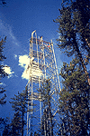
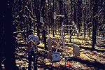

P.I.(s): Dennis Baldocchi -- National Oceanic and Atmospheric Administration (NOAA)
Co-I(s): Tim Crawford, T. Meyers, Robert McMillen -- NOAA
Objectives: To measure and model air-surface exchange rates of water vapor, sensible heat, and CO2 over and under a boreal forest and to study the abiotic and biotic factors that control the fluxes of scalars in this landscape. This study is related to AFM-1. Scalar flux densities were measured with tower-mounted eddy correlation flux measurement systems over an Old Jack Pine stand in the Prince Albert area. Tower-mounted flux measurement systems were implemented above and below the canopy. This configuration allowed the investigation of the relative roles of vegetation and the forest floor on the net canopy exchange of mass and energy. The tower-mounted flux measurement system was also used to study temporal patterns (diurnal and seasonal) of mass and energy exchange at a point in the landscape. Core Measurements include the mass and energy exchange studies just described, as well as measurements of meteorological variables.
 A hierarchy of single and multi-layer mass and energy (water vapor, heat, and CO2) exchange models -- based on Eulerian and Lagrangian frameworks and on micrometeorology, radiative transfer, plant physiology, and biochemistry theory -- will be developed and tested using the data obtained over a boreal forest.
A hierarchy of single and multi-layer mass and energy (water vapor, heat, and CO2) exchange models -- based on Eulerian and Lagrangian frameworks and on micrometeorology, radiative transfer, plant physiology, and biochemistry theory -- will be developed and tested using the data obtained over a boreal forest.
|  The SSA-OJP flux tower |  The under-canopy flux station at SSA-OJP |
Objectives:
Our objective was to measure and model air-surface exchange rates of water vapor, sensible heat and CO2 over and under a boreal forest and to study the abiotic and biotic factors that control the fluxes of scalars in this landscape. Scalar flux densities were measured with tower-mounted measurement systems. Tower-mounted flux measurement systems were installed above and below an old jack pine forest canopy. This configuration allows us to investigate the relative roles of vegetation and the forest floor on the net canopy exchange of mass and energy. We also used the tower-mounted flux measurement system to study temporal patterns (diurnal/seasonal) of mass and energy exchange at a point in the landscape.
Types of Data Collected, Equipment Used:
Key measured flux variables were net radiation, quantum, latent heat, sensible heat, soil heat and CO2 flux densities above and below the canopy. Key measured meteorological variables included wind speed, wind direction, air temperature, relative humidity, soil temperature, CO2 concentration, ozone concentration.
Summary of Places and Times of Measurements:
Old jack pine, Southern Study Area. Data were acquired on a nearly continuous basis. Data of 30 minute average fluxes and meteorological variables have been submitted to BORIS.
Known Problems or Caveats:
The radiation and flux data should be used with caution when the wetness sensor detects moisture. There are some problems with the stability of the ambient CO2 concentration measurements. We experienced appreciable zero drift at times.
Other Information:
Daily average fluxes are being computed and analyzed and will soon be submitted.
TF Overview || TF-1 | TF-2 | TF-3 | TF-4 | TF-5 | TF-6 | TF-7 | TF-8 | TF-9 | TF-10 | TF-11
 Send a data request to the BOREAS Data Manager (BOREAS Investigators only)
Send a data request to the BOREAS Data Manager (BOREAS Investigators only)
E-Mail a comment on this page to the curator 
Send e-mail to Fred Huemmrich, the BORIS representative for the TF group
Return to the TF Overview
Return to the BOREAS Science Groups Overview
Return to the BOREAS Home Page
Last Updated: October 30, 1997
{kind=link}
{kind=link}